Integration guide
One blind matchup — two anonymous models, one connection — framed in five wire protocols through a pluggable adapter layer (server/src/adapters/). Three of the five also parse their protocol's own request body, so a stock AG-UI, OpenAI, or AI SDK client can call the arena with no translation layer. Pick the protocol that matches your stack — and if your client fans a compare view out into one request per model, see slot join.
One stream, five framings
Every protocol carries the identical internal sequence over two slots (A, B); only the framing differs. Each frame is schema-validated (publicArenaEventSchema) before it is written.
Which protocols accept their own request body
| Protocol | Native request body accepted | sessionId / conversationId / arena / joinKey ride in |
|---|---|---|
| AG-UI | RunAgentInput — what HttpAgent, useAGUIRuntime, CopilotKit and LangGraph post | forwardedProps |
| OpenAI SSE | a standard /chat/completions body | the omni_arena extension · user → sessionId |
| Vercel AI SDK | the useChat body (v5 parts or v4 content) | top level, i.e. useChat({ body }) |
| Native SSE | — its native body is OmniArena's | top level |
| A2UI | — no canonical client request envelope exists | top level |
All five read the same four arena fields through one arenaPropsSchema (request-adapter.ts), so slot join works on every path, not only the native one.
Selecting a protocol
selectProtocol resolves response framing and request parsing from one decision, so the client that asks for a protocol's framing is the one allowed to post its body. Precedence: ?protocol= query param → Accept media type → default native SSE. An unknown ?protocol= falls back to SSE. The arena is also served at POST /chat/completions and POST /v1/chat/completions, where the OpenAI protocol is implied by the path — an OpenAI client appends the path to a base URL and can never send ?protocol=.
| Protocol | ?protocol= aliases | Accept media type(s) | Response content-type | Vote token on wire? | Slot A / B carried by |
|---|---|---|---|---|---|
| Native SSE default | sse · native · native-sse | text/event-stream | text/event-stream | Yes | slot field per event |
| AG-UI | agui · ag-ui | application/vnd.ag-ui+json | text/event-stream | Yes (CUSTOM) | two slot-tagged messages |
| A2UI | a2ui | application/vnd.a2ui+json · application/x-ndjson | application/x-ndjson | Yes | two surfaces A/B |
| Vercel AI SDK | vercel · vercel-ai · ai-sdk | application/vnd.vercel.ai.ui-message-stream+json | text/event-stream + header v1 | Yes | A = text · B = data parts |
| OpenAI SSE | openai · openai-sse | application/vnd.openai.chat-chunk+json | text/event-stream | Yes (omni_arena) | choices[0] / choices[1] |
Model A vs B, and voting
Slot join: one matchup over two requests
Everything above assumes the default shape — both slots interleaved on one connection. A chat UI with a compare view does not send that shape: it fans a multi-model turn out into one request per model, each with a single answer channel and a shared conversation id. Open WebUI v0.10 is the measured case. Served naively it garbles both answers into one column, or produces two unrelated matchups and two half-votes.
| sessionId required | Authority is the whole scope — session + conversation + exact prompt, HMAC'd with a per-process secret — not the joinKey, which is only a correlation id. A joinKey without a session is refused rather than downgraded to a guessable string. A sibling differing in any scope field simply gets its own matchup. |
| Unpaired degrades | Window closes with no sibling → both slots on that one connection (slots: ["A","B"], votable). Nothing generated in vain, and the vote stays honest because the user sees both answers either way. |
| Slot B cannot be lost | The leader owns the shared generation and all persistence, so slot B finishes and is recorded even if its sibling disconnects. The sibling has its own control-plane handle, so stopping its stream does not stop the round. |
| Failures are symmetric | A pre-stream error on the leader's path (404 Conversation not found, a write conflict) is forwarded to the sibling, so both halves of one turn fail the same way instead of one hanging. |
| Situation | Response |
|---|---|
| joinKey with no sessionId | 400 join_requires_session |
| A third request on a scope whose slots are taken | 409 join_slots_exhausted |
| A sibling arriving after the window closed | 409 join_expired |
| Too many unpaired scopes in flight | 503 join_unavailable |
| The leader never started the round | 504 join_leader_timeout |
Native SSE default
?protocol=sse · sse.ts. One event:/data: pair per event; no trailing sentinel.
event: matchup_started
data: {"type":"matchup_started","matchupId":"m1","matchupToken":"eyJ….sig",
"conversationId":"c1","turnIndex":0,"slots":["A","B"]}
event: token
data: {"type":"token","slot":"A","token":"He"}
event: matchup_done
data: {"type":"matchup_done"}| Slots | every event carries a slot field |
| Vote token | On matchup_started — self-contained |
| Errors | one slot → event: slot_error · whole round → terminal event: run_error (code, message); pre-stream failures are HTTP statuses |
| Suits | the demo, the @omni-arena/react SDK, custom EventSource/fetch clients — the only path that needs no transport of your own |
AG-UI
?protocol=ag-ui · ag-ui.ts · SSE, one data: line per typed AG-UI event. Two slots become two text messages in one run.
data: {"type":"RUN_STARTED","threadId":"c1","runId":"m1"}
data: {"type":"CUSTOM","name":"arena_matchup","value":{"matchupId":"m1","matchupToken":"eyJ….sig",
"slots":["A","B"],"mode":"matchup","votable":true,"conversationId":"c1","turnIndex":0}}
data: {"type":"TEXT_MESSAGE_START","messageId":"m1:A","role":"assistant","slot":"A"}
data: {"type":"TEXT_MESSAGE_CONTENT","messageId":"m1:B","delta":"Yo","slot":"B"}
data: {"type":"CUSTOM","name":"slot_error","value":{"slot":"B","message":"boom"}}
data: {"type":"TEXT_MESSAGE_CONTENT","messageId":"m1:B","delta":"\n\n[omni-arena:slot-error] boom\n","slot":"B"}
data: {"type":"TEXT_MESSAGE_END","messageId":"m1:A","slot":"A"}
data: {"type":"RUN_FINISHED","threadId":"c1","runId":"m1"}| Request | A canonical RunAgentInput is accepted, so new HttpAgent({ url }) — and useAGUIRuntime, CopilotKit, LangGraph — works with no subclass. Prompt = newest user message; forwardedProps carries sessionId / conversationId / arena; state, tools, context ignored. threadId is deliberately not read as a conversationId — clients mint their own (assistant-ui mints a UUID), which would 404 every stock client's first turn. |
| Mapping | started → RUN_STARTED + CUSTOM arena_matchup + TEXT_MESSAGE_START×2 · token → TEXT_MESSAGE_CONTENT · slot error → CUSTOM slot_error + marked TEXT_MESSAGE_CONTENT · done → TEXT_MESSAGE_END / RUN_FINISHED · run error → RUN_ERROR |
| Slots | tagged slot; messageId = "<runId>:<slot>"; runId=matchup, threadId=conversation (or the matchup id when there is no conversation — AG-UI requires a thread) |
| Vote token | On CUSTOM arena_matchup (right after RUN_STARTED) — CUSTOM is AG-UI's sanctioned escape hatch; clients that ignore it still render correctly. Because mainstream runtimes do ignore it, the same metadata is repeated in the x-arena-matchup response header and readable from GET /api/arena/matchups/:id. |
| Run ids | A RunAgentInput carrying threadId/runId gets them echoed on RUN_STARTED / RUN_FINISHED. The slot channel does not move with them — messageId stays <matchupId>:<slot>. |
| Dead slot is visible | mainstream runtimes drop CUSTOM (assistant-ui's aggregator has no case for it), which left a failed slot as a blank column — so the failure also goes out as text prefixed [omni-arena:slot-error], distinguishable from the model saying those words. The CUSTOM event stays authoritative. |
| Errors in-band | an AG-UI client settles a run on RUN_ERROR and reads a non-2xx as a dead transport, so every failure here — including the 409 "vote before continuing" — is a 200 stream carrying RUN_ERROR with a code. Mid-stream failures too: the response used to end with neither RUN_FINISHED nor an error, hanging clients. |
| Suits | both directions: CopilotKit, LangGraph, CrewAI, assistant-ui's react-ag-ui runtime can call the arena directly, and the response drops into such a runtime unchanged, two concurrent messages and all. One caveat survives — runtimes discard CUSTOM, so voting reads the metadata from the x-arena-matchup header (or GET /api/arena/matchups/:id); a raw AgentSubscriber beside the runtime also works and is what the shipped integration did before the header existed. integrations/assistant-ui/ runs against the real runtime; its agent subclass predates this adapter's request side and is no longer needed to call the arena. |
A2UI
?protocol=a2ui · a2ui.ts · NDJSON, one flat JSON object per line, versioned a2ui/1. Two side-by-side surfaces.
{"v":"a2ui/1","kind":"surface_init","matchupId":"m1","matchupToken":"eyJ….sig","conversationId":"c1",
"turnIndex":0,"surfaces":["A","B"],"mode":"matchup","votable":true}
{"v":"a2ui/1","kind":"text_append","surface":"A","text":"He"}
{"v":"a2ui/1","kind":"error","surface":"B","message":"boom"}
{"v":"a2ui/1","kind":"surface_done","surface":"A"}
{"v":"a2ui/1","kind":"session_done"}| Mapping | started → surface_init · token → text_append · slot error → error · done → surface_done / session_done · run error → session_error (code, message) |
| Slots | each message names its surface (A/B) |
| Vote token | On surface_init — flat and self-describing, alongside matchupId, mode, votable |
| Request | OmniArena's own body — output-only on ingress. A2UI describes how an agent paints a UI, not how a client asks for one, so there is no canonical envelope to accept; inventing one would match no third-party client. If a de-facto request body emerges it plugs into the same RequestAdapter port the other three use. |
| Suits | generative-UI frontends painting their own design system per surface |
Vercel AI SDK
?protocol=vercel-ai · vercel-ai.ts · AI SDK UI Message Stream over SSE (header x-vercel-ai-ui-message-stream: v1), trailing data: [DONE]. A stock useChat can both post to and render it unchanged.
data: {"type":"start"}
data: {"type":"data-arena-meta","data":{"matchupId":"m1","matchupToken":"eyJ….sig",
"conversationId":"c1","turnIndex":0,"mainSlot":"A","dataSlot":"B"}}
data: {"type":"text-start","id":"m1"}
data: {"type":"text-delta","id":"m1","delta":"He"}
data: {"type":"data-arena-b-delta","data":{"text":"Yo"}}
data: {"type":"data-arena-error","data":{"slot":"B","message":"boom"}}
data: {"type":"text-end","id":"m1"}
data: {"type":"finish"}
data: [DONE]| Request | The useChat body is accepted in both message shapes (v5 parts, v4 content). Arena inputs are read from the top level, where useChat({ body }) puts extras — so useChat({ api: "…?protocol=vercel", body: { sessionId } }) needs no route of its own. id, trigger, messageId ignored. A Next.js app will often still want a route in front, but as a proxy, not a translator. |
| Slots | A = primary text (text-delta) · B = data-arena-b-delta parts (then data-arena-b-done) |
| Errors | single-slot → data-arena-error · whole round → the AI SDK's own error part (errorText), which useChat surfaces as the chat's error state |
| Vote token | On data-arena-meta — the AI SDK path is votable with no second channel |
| Suits | the React + Vercel AI SDK family — AI Chatbot template, Lobe Chat, any useChat app. Lowest friction in practice: such an app already has a server route between useChat and the model, and that route becomes the transport. |
| Example | examples/vercel-ai-chatbot (Next.js 16) |
OpenAI-compatible SSE
?protocol=openai · openai-sse.ts · chat.completion.chunk frames, trailing data: [DONE]. Every frame lists both slots in slot order: choices[0] is always A, choices[1] always B. Point a client at {base} and it works: POST /chat/completions and /v1/chat/completions serve the arena with this protocol implied by the path, and GET /models answers the connection probe.
data: {"id":"chatcmpl-…","object":"chat.completion.chunk","created":1770000000,
"model":"omni-arena","choices":[{"index":0,"delta":{"role":"assistant"},"finish_reason":null},
{"index":1,"delta":{"role":"assistant"},"finish_reason":null}],
"omni_arena":{"matchupId":"m1","matchupToken":"eyJ….sig","conversationId":"c1",
"turnIndex":0,"mode":"matchup","votable":true}}
data: {"id":"chatcmpl-…","object":"chat.completion.chunk","created":1770000000,
"model":"omni-arena","choices":[{"index":0,"delta":{"content":"He"},"finish_reason":null},
{"index":1,"delta":{},"finish_reason":null}]}
data: {"id":"chatcmpl-…","object":"chat.completion.chunk","created":1770000000,
"model":"omni-arena","choices":[{"index":0,"delta":{},"finish_reason":null},
{"index":1,"delta":{},"finish_reason":"stop"}]}
data: [DONE]| Request | A standard /chat/completions body is accepted. Prompt = newest user message (string or text parts); user seeds sessionId; sampling knobs and tool declarations ignored. No standard home exists for a conversation id or the arena opt-in, so those ride an omni_arena request extension — the mirror of the omni_arena object written onto chunk one. stream: false is refused with a 400 naming the field: a matchup is two live streams, with no buffered chat.completion to return. |
| Slots | A = choices[0], B = choices[1]; role on start, content deltas, finish_reason:"stop" on done (kept in later frames, not retracted); a slot idle in a frame gets an empty delta. A single round declares one slot, so one choice. |
| Errors | slot → top-level omni_arena_error ({ slot, message }) plus the same text in that choice's delta.content behind an [omni-arena:slot-error] marker, since a plain OpenAI client has no other channel and would otherwise read it as the model's own words · run → an { "error": { message, type, code } } frame, then [DONE] |
| Vote token & multi-turn | Optional omni_arena on the first chunk only, now including conversationId / turnIndex so multi-turn works here too. OpenAI's contract dictates the chunk shape, so it cannot be a required field; compatible clients ignore unknown top-level fields, so Open WebUI is unaffected. |
| Model list | OpenAI UIs probe GET {base}/models on connect; OmniArena answers that and /v1/models with the enabled roster (see API) |
| Suits | OpenAI-compatible chat UIs — Open WebUI (largest, non-React), LibreChat, Lobe Chat, Chatbot-UI, any OpenAI SDK client. They can now call the arena directly. What "OpenAI-compatible" still does not give you is the interaction: the protocol has no vote, no reveal, and usually one message channel per turn, so rendering two columns and collecting a vote stays the app's problem. integrations/open-webui/ solves that for Open WebUI, and two thirds of that bridge have since moved into the server: its request translation is redundant now that this adapter parses /chat/completions bodies, and its pairing of Open WebUI's two parallel model requests is what slot join does natively. What stays genuinely bridge-shaped is the interaction — rendering the duel and collecting the vote and reveal in the message channel. |
Reference example apps
| Example | Stack | Adapter | Notes |
|---|---|---|---|
| vercel-ai-chatbot | Next.js 16 App Router · @ai-sdk/react | ?protocol=vercel-ai | Server route forwards to OmniArena; A on main channel, B from data-arena-b-delta, token from data-arena-meta. |
| assistant-ui | Vite + React · assistant-ui | ?protocol=vercel-ai | useAISDKRuntime renders Model A; Model B alongside from the same data parts. assistant-ui also ships an AG-UI runtime. |
Integration into a real third-party app
The examples above are purpose-built scaffolds. integrations/vercel-ai-chatbot/ answers the harder question — does arena mode survive inside an app that was never written for it?
Two more integrations exercise the other adapters against real upstream apps, and each documents what it found:
| Integration | Upstream app | Adapter | What it took |
|---|---|---|---|
| open-webui | Open WebUI (SvelteKit + FastAPI) | ?protocol=openai | A bridge presenting an OpenAI surface — model list included — that renders the duel, vote, and reveal inside Open WebUI's single message channel. |
| assistant-ui | assistant-ui's with-ag-ui example | ?protocol=ag-ui | A route forwarding the AG-UI stream to the stock @assistant-ui/react-ag-ui runtime, plus arena UI for vote and reveal. |
What the adapters look like in a real app
Both Next.js integrations photograph themselves: every image below is the real app against the real server. Regenerate a set with npm run screenshots in that integration's directory, which drives it with Playwright against a key-free provider.
Vercel AI SDK, inside vercel/ai-chatbot
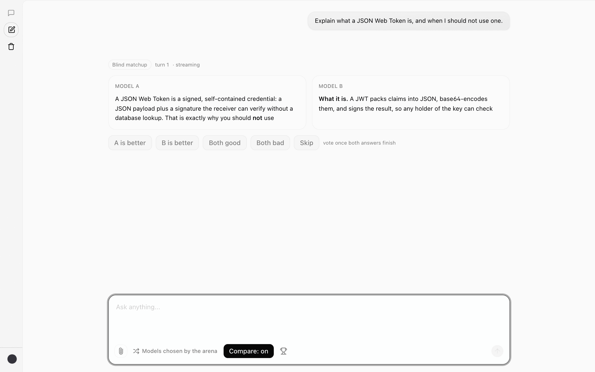
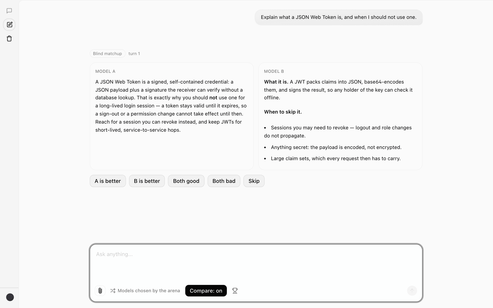
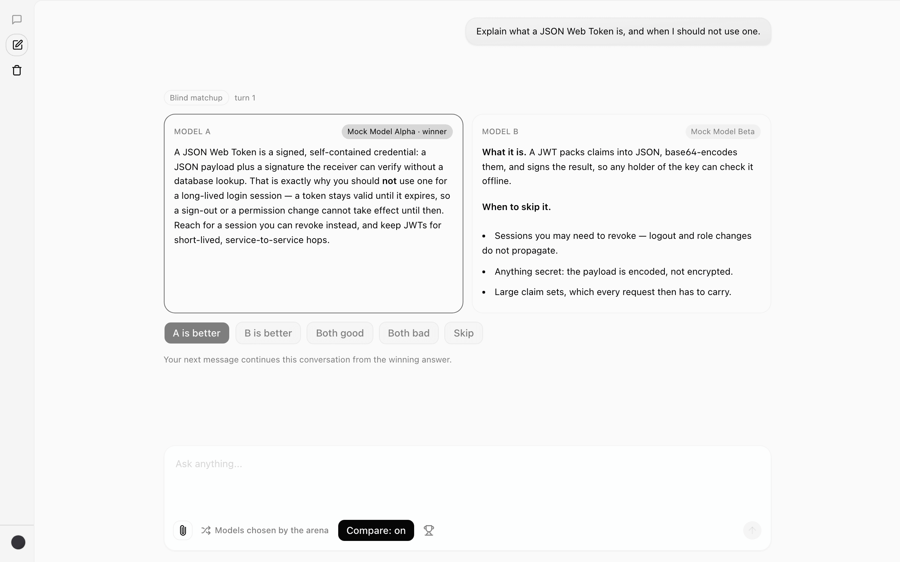
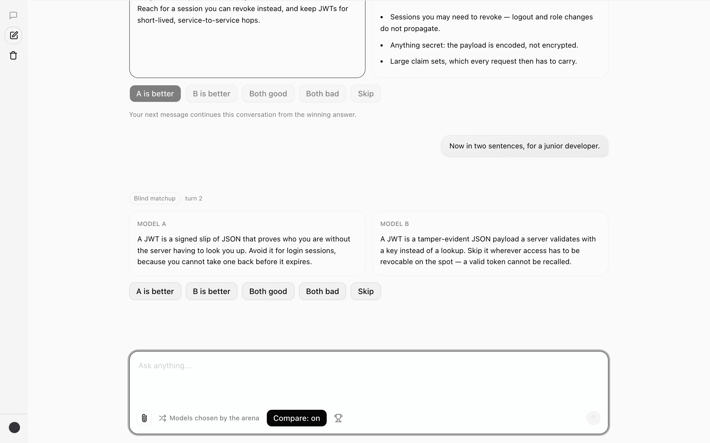
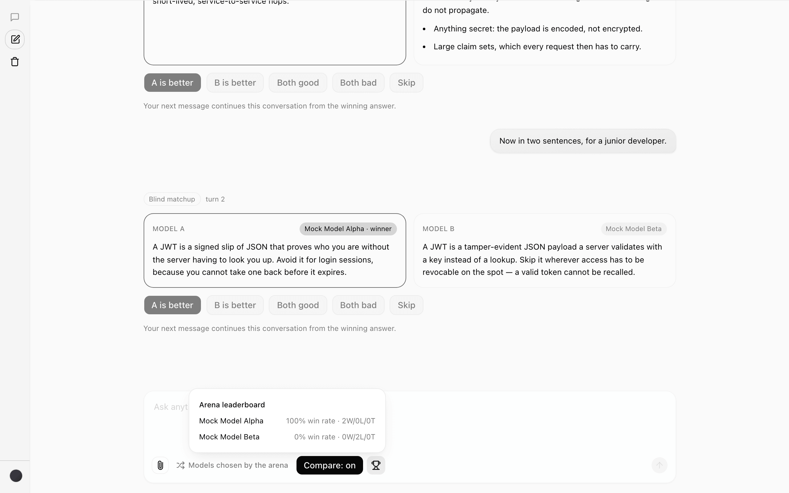
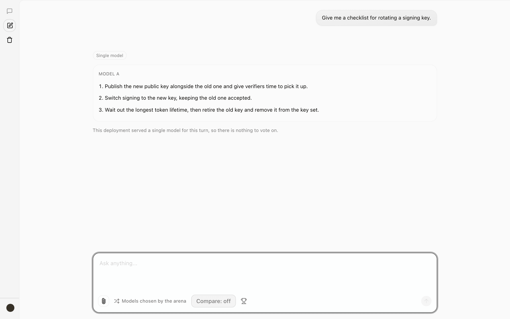
AG-UI, inside assistant-ui's with-ag-ui example
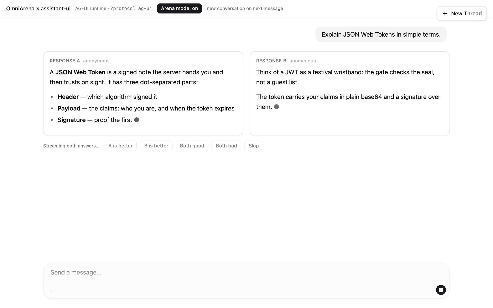
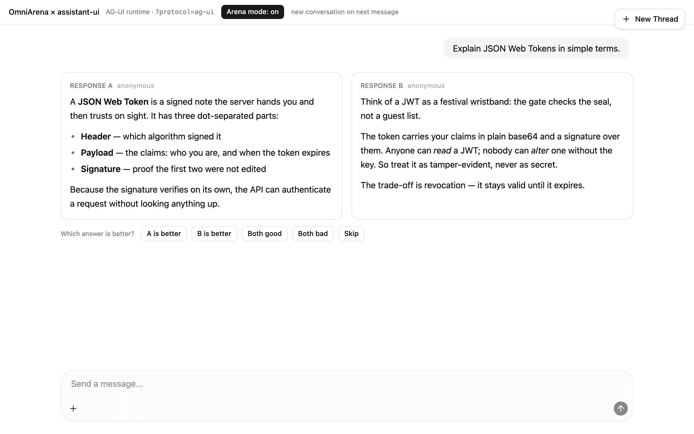
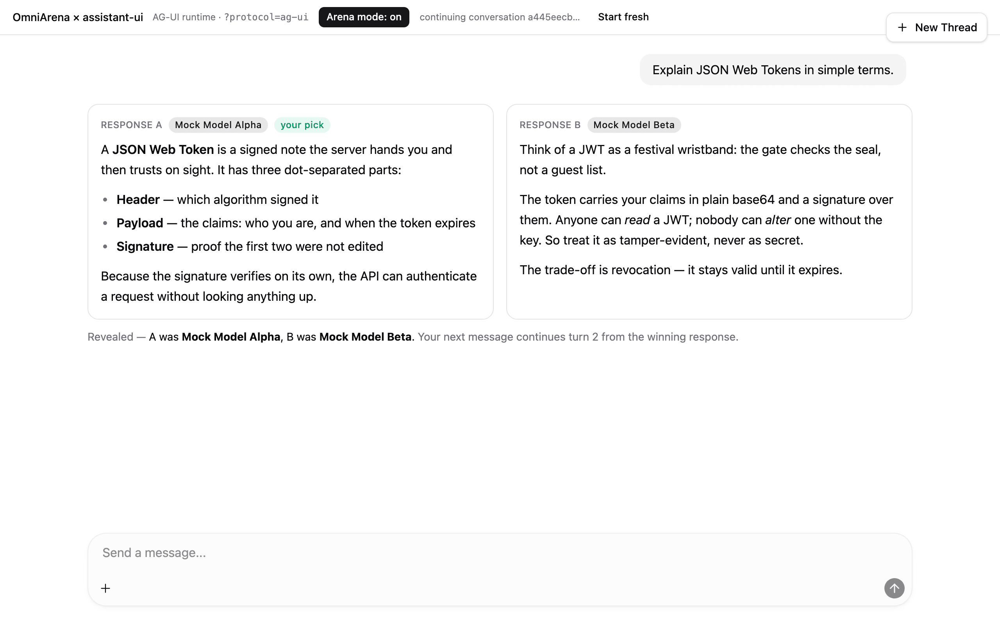
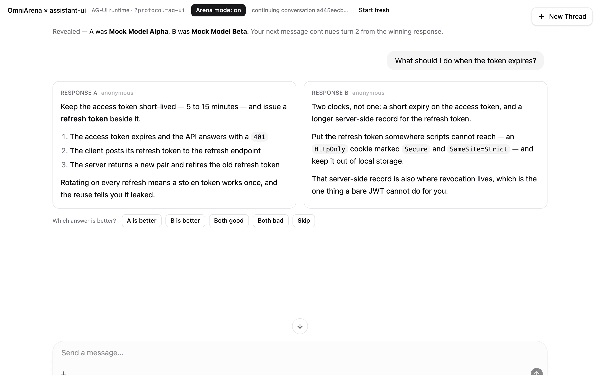
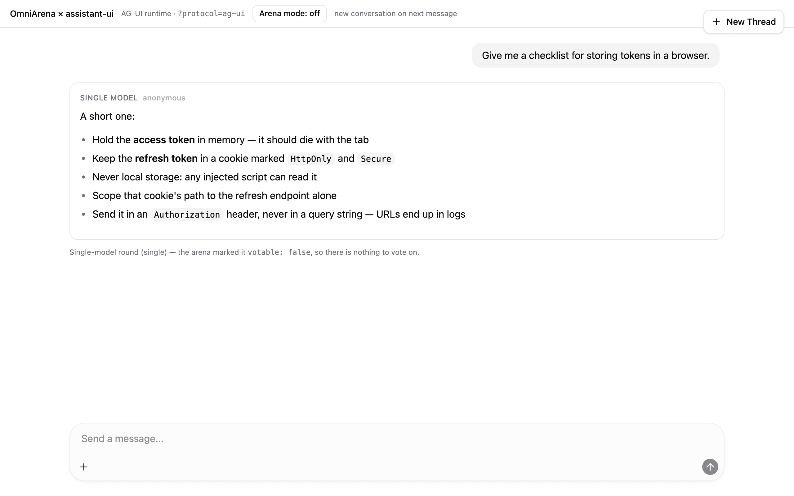